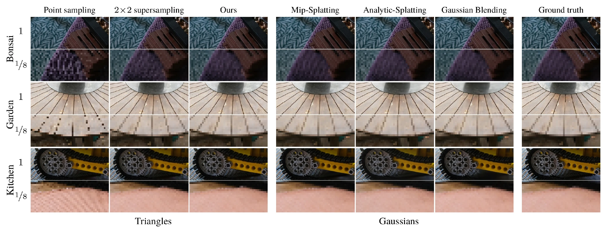
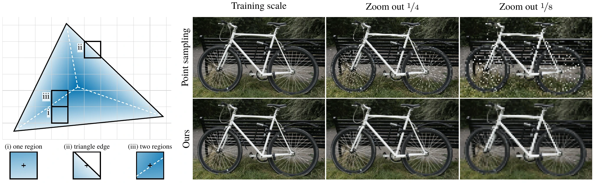
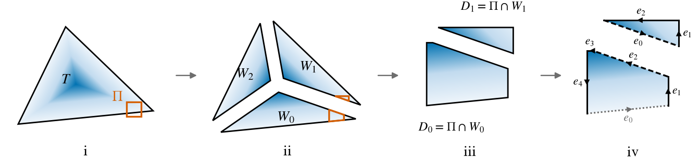
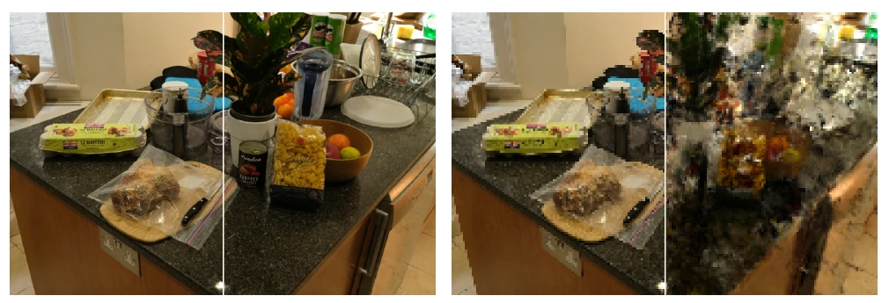

ATS
Anti-Aliased Triangle Splatting with Exact Per-Primitive Integrals
Digital Future Lab, Flanders Make, Hasselt University
TL;DR: the exact integral of each triangle over the pixel, in closed form, with exact gradients.
Abstract
Triangle Splatting represents scenes using semi-transparent triangles, but it evaluates each triangle at the pixel center and culls any triangle with an inradius smaller than one pixel. The former causes severe aliasing, while the latter culls most of the scene at lower resolutions. We show that the integral of the Triangle Splatting window over a pixel admits an exact closed-form solution. The angle bisectors split the triangle into three sub-triangles, in each of which the window is a power of the distance to one edge. Each piece therefore has a closed-form antiderivative, and Green's theorem reduces the integral and its gradients to one term per side of the sub-triangle clipped against the pixel. The integral over the whole triangle, which we show has a closed form, then allows conservative culling, removing only triangles that cannot meet the renderer's alpha cutoff at any pixel. This exact formulation anti-aliases existing models without retraining, exhibits less temporal aliasing than 2×2 supersampling, and enables multi-scale training, matching or outperforming supersampled training at reduced resolutions.
Less flickering than 2×2 supersampling
The camera pans by 1/16 of a pixel per frame at 1/8 of the training resolution, and the pixels are enlarged. All renderers draw the same trained Triangle Splatting model, so only the renderer differs. Point sampling misses triangles that fall between pixel centers, and they pop in and out as the camera moves. Supersampling only samples at a higher resolution, so small triangles still fall between its samples and flicker. Our pixel integral accounts for every triangle that overlaps the pixel, so its color changes smoothly with the motion. Move the mouse over the video, or drag on a phone, to move the split.
| Renderer | Mip-NeRF 360 | Tanks and Temples | Deep Blending | |||
|---|---|---|---|---|---|---|
| 1/4 | 1/8 | 1/4 | 1/8 | 1/4 | 1/8 | |
| Point sampling | 10.1 | 20.7 | 13.1 | 27.0 | 3.7 | 8.6 |
| 2×2 supersampling | 3.8 | 9.2 | 5.1 | 13.0 | 1.4 | 3.7 |
| Ours | 1.9 | 3.3 | 2.7 | 4.5 | 0.9 | 1.7 |
Zooming out
Trained at a single scale, Triangle Splatting aliases as soon as the camera moves away from the scene. The video zooms out from the training resolution to 1/8 of it and then pans, with point sampling on the left and our pixel integral on the right.

Method
Triangle Splatting defines each projected triangle through the signed distances dk(p) = nk·p + Ok to its three edges, and a window that falls from 1 at the incenter to 0 on the boundary, with the inradius r and a learned smoothness σ:
The renderer evaluates this window only at the pixel center. We integrate it over the whole pixel instead, which equals filtering the window exactly with a box pixel filter. We then alpha-blend with α = o C, where C is the pixel integral, and the rest of the pipeline is unchanged.

Splitting at the bisectors
The maximum in the window splits the triangle along its angle bisectors into three sub-triangles. Inside each one, the window depends only on the distance to a single edge, so it is a power of a linear function. We clip each sub-triangle against the pixel, and Green's theorem turns the integral over the clipped region into one closed-form term per side.

One closed-form term per side
With u = −d(p)/r the normalized distance to the edge and a the position along it, the window of a sub-triangle is uσ. Summing over the sides E = (A, B) of each clipped sub-triangle gives the pixel integral
The gradients with respect to the edge normals n, the offsets O and the smoothness σ are integrals of the same kind over the same regions, so a single pass over the sides gives both C and all its gradients, and we train with the exact integral.
Conservative culling
Triangle Splatting culls every triangle whose projected inradius is below one pixel. When zooming out, nearly every triangle becomes that small, and the cull removes most of the scene.

The integral of the window over the whole triangle has a closed form, 2A/((σ+1)(σ+2)) for a triangle of area A in pixels, and no pixel integral can exceed it. We cull a triangle only when even this total, times its opacity, falls below the alpha cutoff of the renderer:
Such a triangle stays below the cutoff in every pixel, so the cull never changes the image.
Efficient rendering
The pixel integral costs more per triangle and pixel than a point sample, and a low-resolution frame has too few tiles to keep the GPU busy. We render 8×8 tiles and cut each tile's depth-sorted triangle list into slices, each rendered by its own thread block and composited front to back. On an RTX 5090, ours renders the Mip-NeRF 360 scenes at 99 to 322 FPS, from the training resolution down to 1/8 of it.
Results
Zooming out after single-scale training
Every model is trained at the training resolution and tested at 1 to 1/8 of it. At 1/8, ours improves on Triangle Splatting by 4.4 dB. 2×2 supersampling reaches a higher PSNR at the lower scales, but ours has the better SSIM and LPIPS at 1/8 and flickers less.
| Method | PSNR ↑ | at 1/8 | ||||
|---|---|---|---|---|---|---|
| 1 | 1/2 | 1/4 | 1/8 | SSIM ↑ | LPIPS ↓ | |
| Triangle Splatting | 27.16 | 27.78 | 26.87 | 24.83 | 0.765 | 0.178 |
| Triangle Splatting, 2×2 supersampled | 27.27 | 28.41 | 29.69 | 29.90 | 0.908 | 0.072 |
| Ours | 27.26 | 28.36 | 29.33 | 29.26 | 0.920 | 0.062 |
Multi-scale training
Because the integral is exact at every resolution, the same renderer trains and tests at every scale. Each iteration renders a training view at a random scale from 1 to 1/8, and every model is trained with the renderer it is tested with. Training with our integral beats training with 2×2 supersampling in all but two configurations across the four data sets, and on Mip-NeRF 360 at every scale.
| Method | PSNR ↑ | at 1/8 | ||||
|---|---|---|---|---|---|---|
| 1 | 1/2 | 1/4 | 1/8 | SSIM ↑ | LPIPS ↓ | |
| Triangle Splatting | 25.69 | 26.87 | 27.82 | 26.45 | 0.835 | 0.130 |
| Triangle Splatting, 2×2 supersampled | 26.65 | 27.98 | 29.56 | 30.27 | 0.921 | 0.063 |
| Ours | 26.91 | 28.29 | 29.93 | 31.00 | 0.941 | 0.046 |
Comparison with Gaussian anti-aliasing
Without our integral, triangles fall 5.5 dB behind the best Gaussian method at 1/8 on Mip-NeRF 360. Anti-aliasing closes most of this gap: after single-scale training, ours is ahead of Mip-Splatting and Analytic-Splatting at 1/8 and second only to Gaussian Blending, which also models the opacity distribution within the pixel.
| Method | Mip-NeRF 360, 1 | Mip-NeRF 360, 1/8 | ||||
|---|---|---|---|---|---|---|
| PSNR ↑ | SSIM ↑ | LPIPS ↓ | PSNR ↑ | SSIM ↑ | LPIPS ↓ | |
| 3DGS | 27.52 | 0.814 | 0.217 | 18.79 | 0.567 | 0.240 |
| Mip-Splatting | 27.66 | 0.827 | 0.190 | 28.89 | 0.925 | 0.060 |
| Analytic-Splatting | 27.52 | 0.816 | 0.215 | 28.47 | 0.917 | 0.074 |
| Gaussian Blending | 26.86 | 0.803 | 0.237 | 30.37 | 0.931 | 0.068 |
| Ours | 27.26 | 0.819 | 0.187 | 29.26 | 0.920 | 0.062 |
BibTeX
@misc{zoomers2026atsantialiasedtrianglesplatting,
title={ATS: Anti-Aliased Triangle Splatting with Exact Per-Primitive Integrals},
author={Brent Zoomers and Joni Vanherck and Leander Winters and Jeroen Put and Lode Jorissen and Nick Michiels},
year={2026},
eprint={2611.22512},
archivePrefix={arXiv},
primaryClass={cs.CV},
url={https://arxiv.org/abs/2611.22512},
}
Acknowledgements
This research was partly funded by the FWO fellowship grants (1SHDZ24N, 1S80926N), the Special Research Fund (BOF) of Hasselt University (R-14360, R-14436), the Flanders Make SBO projects NORM.AI (R-13936), and ALARMM (R-15482). This work was made possible by MAXVR-INFRA, a scalable and flexible infrastructure that facilitates the transition to digital-physical work environments.
This work builds on Triangle Splatting; we thank its authors for releasing their code.